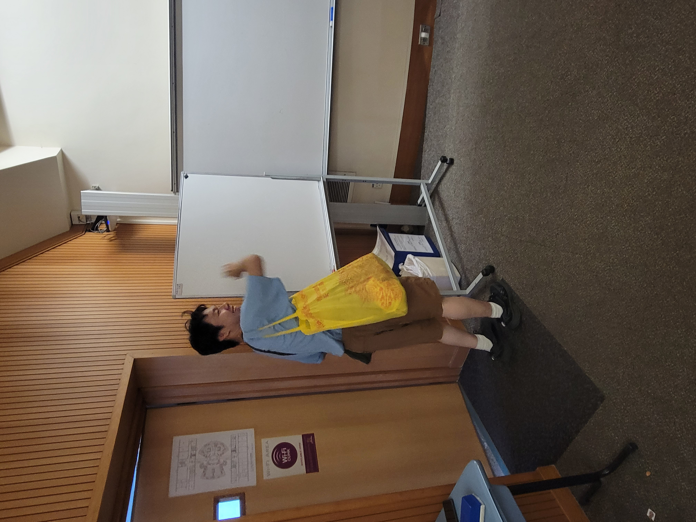

Dr Fong likes to go to a restaurant called "蘭苑" one time I ate lunch with my roommate in there, and i heard the waitress saying "幫方Sir 做啲野先", i was excited talking to my roommate, as a result, i said,"咩方Sir啊，Dr Fong啊嘩？" when i look at my back, i saw Dr Fong sitting in the chair, staring at me, I immediately look away, I thought I am going to die, 方丈好小氣，好彩無事。
Professor
CUHK
Dr Fong
- dressed long worn out clothes
- always say serious mistake, you should quit math major
- in fact cares a lot about his students, but by mocking
- in charge of many things in math department
he is a real mascot of math department, my friends call him the Shao Lin man who sweeps the floor because he seems like the person who removes students who are not suitale for math major with his famous course "MATH1050" introduction to Modern Mathematics, he hates students talking in his class, always yell at us and say, keep quiet!!!
